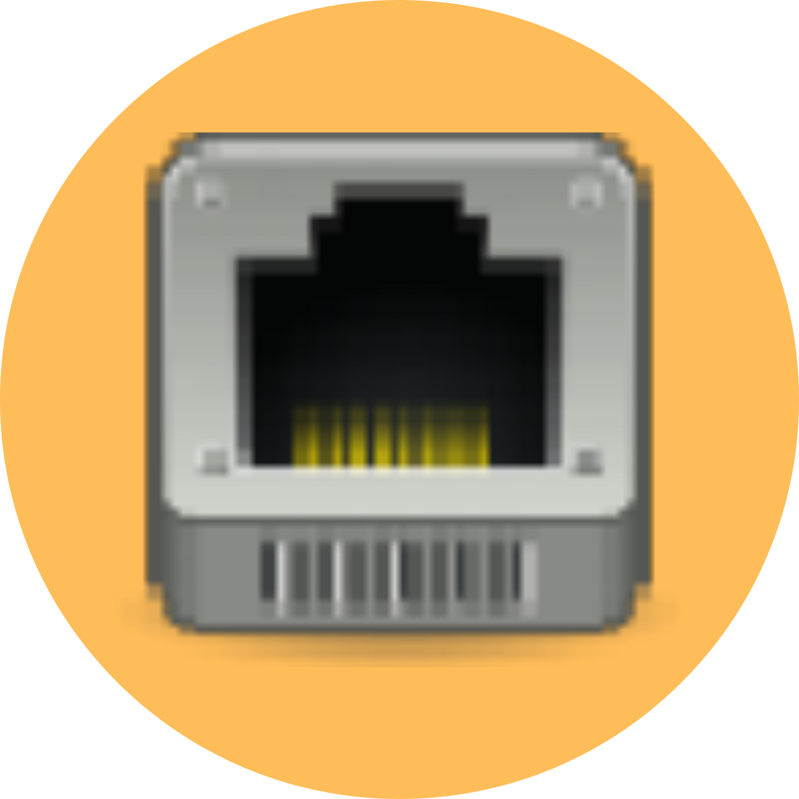

CONTENIDO
TABLERO

- Cada jugador cuenta con 3 canales donde podrá atacar el servidor del contrincante y mismos en los que deberá defender el suyo.
- Cada canal podrá acumular un máximo de 3 cartas de Ciberseguridad
- En la parte superior centro del tablero se colocan bocabajo los 3 mazos de tipos de cartas que el jugador podrá “jalar”.
CARTAS

CIBERATAQUE

BOOTCAMP

CIBERSEGURIDAD
CANALES

HARDWARE

REDES